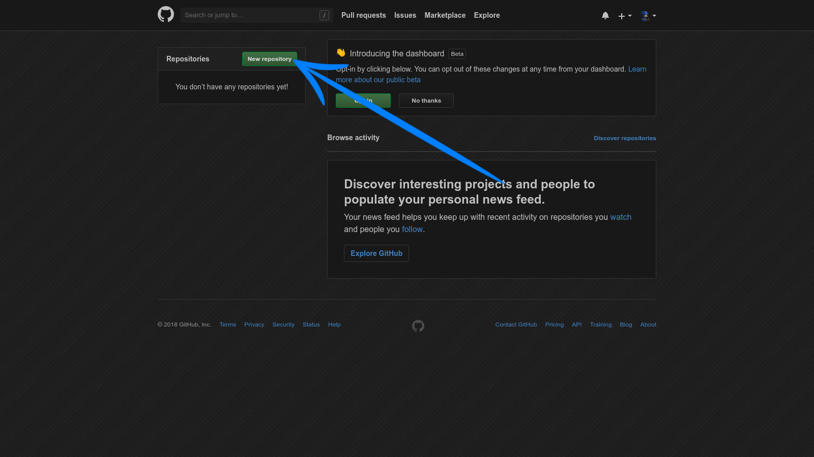
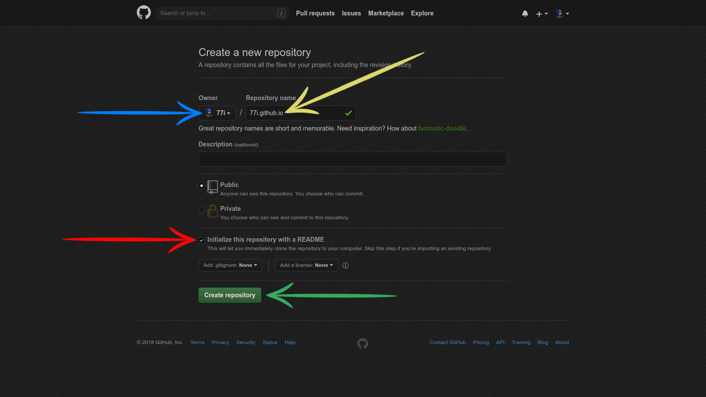
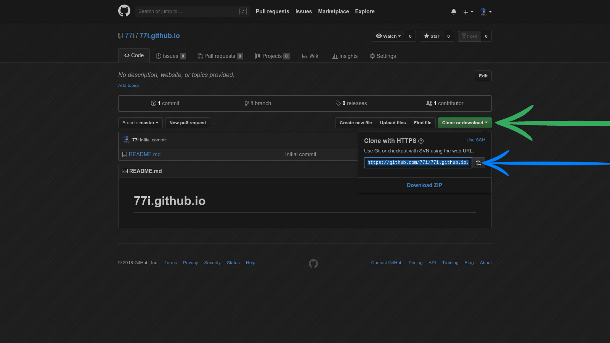
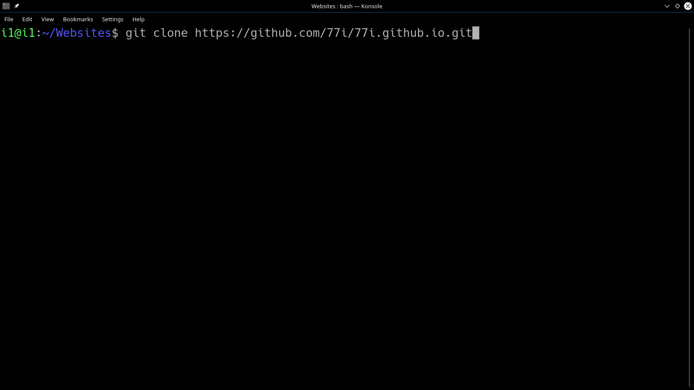
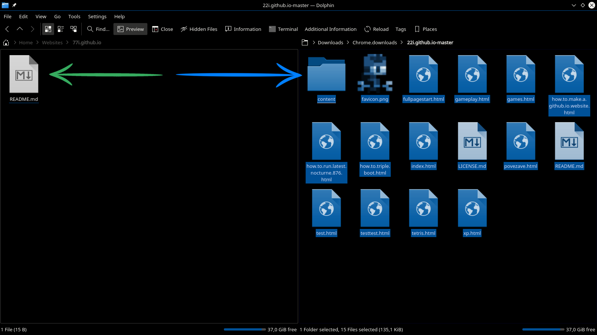
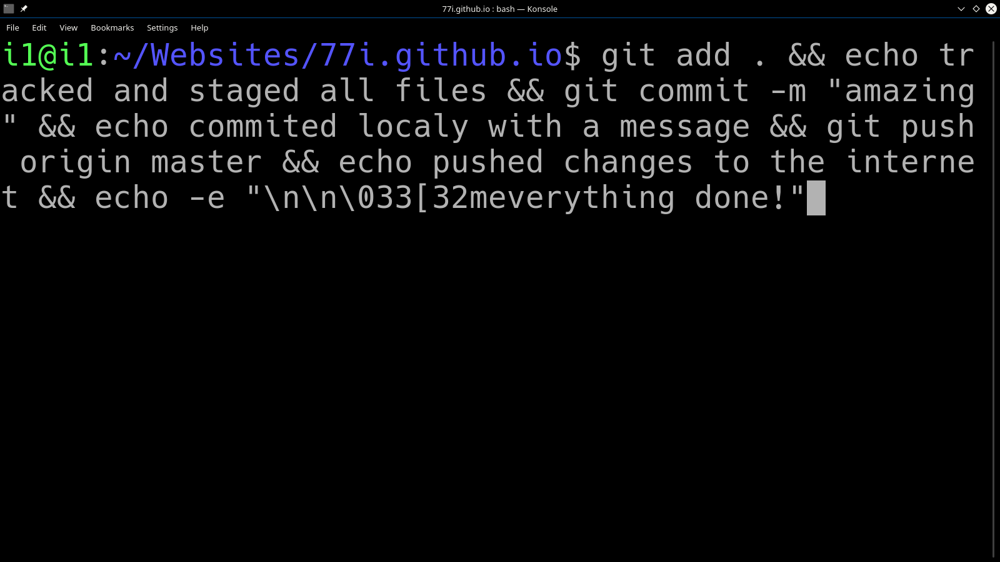

1. visit github you will need to have a github account

2. once logged in create a New repository

3. you can see your github username on the left under Owner. In the Repository name field enter your username and add .github.io at the end, make sure initialize this repository with a README is checked then press Create repository from now on wherever you see 77i you replace it with your github username

4. now click on the Clone or download then press the copy link button

5. now go to your websites folder (a folder where you keep most of your websites) and open terminal from there and write this in
git clone
also paste in the link you copied in step 4.

6. now download 22i website source code by clicking here on the left we see new folder created by git clone command . On the right we can see extracted 22i website source code . Move all the files from the right to the left

7. now open terminal from the left folder (look at step 6) and execute this command there
git add . && echo tracked and staged all files && git commit -m "amazing" && echo commited localy with a message && git push origin master && echo pushed changes to the internet && echo -e "\n\n\033[32meverything done!"
from this momment forward you can repeat step 7 to update your website